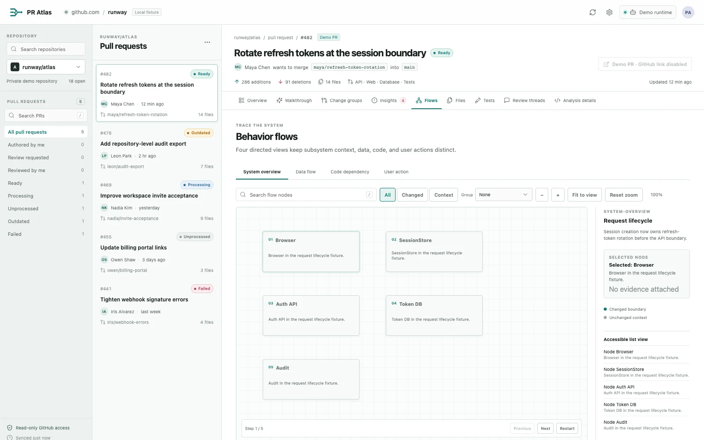
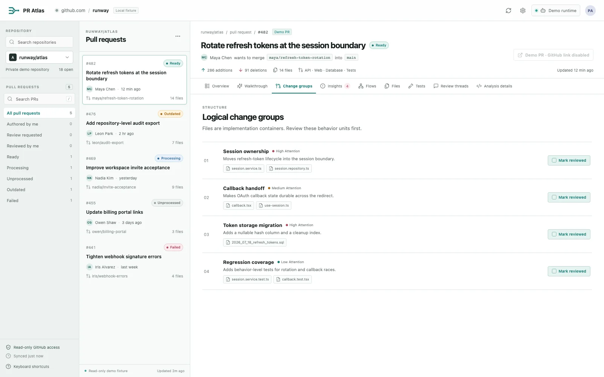

Requested changeThe behavior you asked the agent to implement
5 filesBuilt for the agent era / local-first
Coding agents made changing code fast. Understanding it is still human work.
An agent can open a pull request in minutes — and leave you sorting the requested behavior from unrelated edits, broad refactors, and abandoned approaches. PR Atlas turns machine-speed changes into an evidence-backed map you can actually review.
Existing gh auth · application-managed checkout · human review stays yours
Change velocityReview capacity
Agent outputmachine speed
Human understandinghuman pace
Generation scales. Judgment does not.
Why Atlas01 / 05
The new review bottleneck
The diff looks complete. The story is buried.
Agent slop is not only bad code. It is review work that was cheap to generate and is expensive to verify — plausible changes whose purpose, scope, and side effects still need human judgment.
The risk is hidden in the mix.
Pull #482Requested: rotate session tokens
Unrelated changesWhy did authentication also touch billing?
6 filesOversized refactorA “cleanup” that obscures the functional change
9 filesAbandoned approachSpeculative edits left behind after the agent changed direction
4 files24 files changedOne reviewer must reconstruct the intent.
PR Atlasintent→impact→tests→evidence
Product view02 / 05
PR Atlas overview
Local walkthrough fixture
atlas / pull #482 · c2f9a71
Method03 / 05
A deliberate handoff
From pull request to
shared understanding.
Each run is bounded, explicit, and orchestrated from your machine. Choose the runtime, see the consent boundary, then follow validated output through the fixed UI.
STEP 01 / INPUT
Start with the context you already trust.
PR Atlas reuses your authenticated GitHub CLI session for read-oriented discovery. No account, OAuth flow, or personal-token store is introduced.
$ gh pr view 482 --repo runway/atlas
A short guided pass
Behavior flows, one validated frame at a time.
Switch from the system overview to data, dependency, and user-action paths without losing the evidence trail.

Static flow view — press play when motion is welcome.Inside the map04 / 05
One pull request, several useful readings
Make the invisible structure legible.
Start broad, zoom into a behavior, and always have a source path back to the changed code.

A1
Logical change groups
Group files, symbols, rationale, before/after behavior, and review order into one explainable unit.
files → behavior↗
A2
Four flow views
Trace the system overview, data flow, code dependency, and user action with changed/context filters and guided tours.
system · data · dependency · user↗
A3
Review insight clustering
Keep human and automated threads connected while preserving active, resolved, disputed, and outdated state.
signal, not verdict↗
A4
Tests tied to behavior
See which changed behaviors are covered, partial, or missing — and jump to the exact assertion or file evidence.
covered · partial · missing↗
A5
History you can trust
Every validated run records provider, reported model, schema and skill versions, and analyzed commit SHA. New commits make it stale.
traceable by commit↗
Trust & boundaries05 / 05
Useful because it stays in its lane
Clarity without a hidden hand.
PR Atlas is a comprehension and navigation tool. It does not replace human judgment with an automatic approval verdict.
Read the security boundaries- Local-first by defaultSource, inputs, logs, and validated walkthroughs stay in Electron app data; managed worktrees do not alter your checkout.
- Explicit provider consentSee the provider-specific confirmation before repository context is sent to its configured model service.
- Fixed, validated UISchema-checked JSON renders in the app. Provider-generated HTML and JavaScript never execute in the renderer.
- Read-oriented GitHub accessDiscovery fetches and reads. PR Atlas does not post, edit, resolve, or approve reviews.
Supported local runtimes
 Codex CLI
Cursor Agent
Codex CLI
Cursor Agent
 Claude Code
Claude Code
Codex CLI
Cursor Agent
Claude Code
Download, then review
Get PR Atlas.
Open a pull request.
Building or extending PR Atlas?Open the contributor setup
- 01Download the latest release
Choose the PR Atlas installer for macOS, Windows, or Linux.
View downloads - 02Open the desktop app
Launch PR Atlas. It reuses your authenticated GitHub CLI session and detects supported local runtimes.
- 03Choose, consent, understand
Select a repository, PR, provider, and model. Then follow the evidence.
The next review can begin with a map.